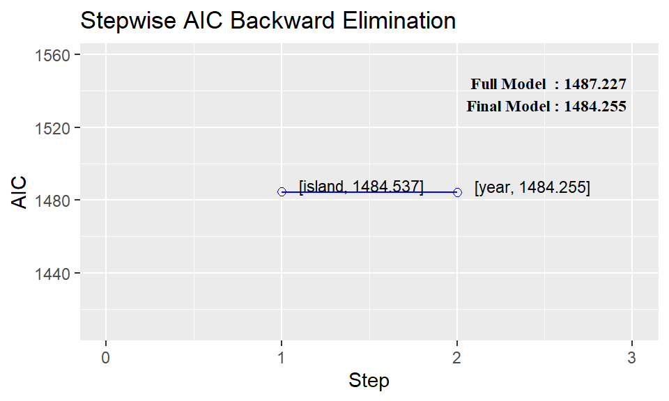

# Antalet observationer totalt
n <- nrow(penguins)
# Antalet som tilldelas till träningsmängden utifrån en andel på 2/3
nTrain <- n*(2/3)
# Sätter ett seed för reproducerbarhet
set.seed(355)
# Index (utvalda observationer) till träningsmängden
indexTrain <- sample(x = n, size = nTrain, replace = FALSE)
# Plockar ut utvalda observationer från materialet med positiv
# indexering (lägger till) för träning och negativ indexering
# (tar bort) för validering
dataTrain <- penguins[indexTrain,]
dataValid <- penguins[-indexTrain,]10 Modellvalidering och variabelselektion
Om ett datamaterial innehåller ett stort antal variabler finns det mängder med potentiella modeller av olika storlek som skulle kunna anpassas. Vi har i tidigare kapitel enbart fokuserat på enstaka modeller som baserat sin struktur utifrån ledtrådar som identifierats i det utforskande steget, men detta blir snabbt tidskrävande vid 10, 20, eller 50 förklarande variabler.
För att effektivisera processen med att hitta en lämplig modell behöver vi dels tydliga instruktioner för hur vi ska gå till väga för att utveckla/förbättra modellerna och olika sätt att kunna utvärdera modellerna i olika aspekter. Vi kommer i detta kapitel presentera olika variabelselektionsalgoritmer och introducera ytterligare mått som vi kan använda för att utvärdera en modell.
10.1 Modellvalidering
En bra regressionsmodell beskriver inte bara det stickprov som vi använt för att anpassa modellen utan kan också anpassa ny liknande data så bra som möjligt. “Så bra som möjligt” betyder i praktiken att vi vill ha säkra prediktioner för ny data, i fall där vi endast har de förklarande variablernas värden att utgå från. Till exempel skulle vi kunna ha anpassat en modell där responsvariabeln är dyr eller svår att mäta (identifiera elakartade tumörer) men de förklarande variablerna är enklare att samla in (andra medicinska mätningar såsom blodvärden etc.).
Eftersom vi inte har tillgång till all potentiell ny och okänd data behöver vi metoder för att utvärdera vår nuvarande modell givet den data vi har. Detta kallas för validering och kan delas upp i två olika sätt att validera modellens generaliserbarhet, det vill säga hur bra modellen är på att beskriva ny liknande data.
Intern validering är mått som beskriver modellen på det data som används för modellanpassningen. Ofta baseras valideringen på något enkelt anpassningsmått, till exempel SSE, eller något mått som också straffar modellen för dess komplexitet, till exempel den justerade förklaringsgraden. Eftersom vi tittar på modeller av olika storlek är det vanligtvis lämpligare att använda mått som tar hänsyn till modellens komplexitet för att jämförelsen ska bli rättvis. I linjära modeller mäts komplexiteten av antalet förklarande variabler, ju fler variabler desto mer komplex är modellen, och valideringen blir då en avvägning mellan en bra modellanpassning och en lagom komplex modell.
Intern validering beskriver endast modellens anpassning på det insamlade datamaterialet och undersöker inte hur modellen skulle prestera på ny information. Fördelen med intern validering är att den är enkel att använda, vi har faktiskt redan gjort detta i tidigare kapitel, men endast vissa av dessa mått kan användas för att dra slutsatser om hur bra modellen är på att generalisera sambandet, däribland AIC som beskrivs i Avsnitt 10.2.1.
I extern validering utvärderar vi den anpassade modellen på ny okänd data som vi själva skapar genom att exempelvis slumpmässigt ta bort en del av observationerna i det insamlade materialet. Denna uppdelning av data medför att vi betecknar data som vi anpassar (tränar) modellen på för träningsmängd och data som vi utvärderar modellen på för validerings- eller testmängd beroende på vad syftet med utvärderingen är.
En valideringsmängd används för att jämföra modeller med varandra och undersöka vilken som är bäst på att generalisera sambandet medan en testmängd används för att få en väntevärdesriktig skattning på något mått i den slutgiltigt valda modellen.1
Fördelen med extern validering är att vi kan få mer information om modellens generaliserbarhet men det kräver att vi också har ny och okänd data att undersöka modellen på. Om vi har tillgång till tillräckligt många observationer i vårt stickprov och kan dela upp materialet i lagom stora mängder eller om vi under modellanpassningen också samlat in ny data, har vi tillfällen där extern validering kan användas.
10.1.1 Generaliserbarhet
En modell som anses lämplig och innehåller variabler som alla verkar ha en signifikant påverkan på responsvariabeln, och på alla sätt och vis kan anses en bra modell för det urval vi har samlat in, behöver inte nödvändigtvis vara en modell som kan prestera lika bra på ny liknande data. Vi kan råka ut för både underanpassning (underfitting) eller överanpassning (overfitting), där den senare av de två är mest vanligt förekommande.
- Underanpassning betyder att modellen är för enkel och inte fångar upp relevanta samband mellan responsvariablen och de förklarande variablerna, exempelvis att vi modellerar ett tredjegradspolynom med en linjär funktion.
- Överanpassning betyder att modellen är för komplex eller avancerad och då börjar modellen att beskriva bruset som finns i data, vilket gör att generaliserbarheten minskar, exempelvis att vi modellerar ett tredjegradspolynom med ett sjättegradspolynom.
När fokus är att undersöka generaliserbarheten används extern validering där det är vanligt att vi slumpmässigt delar upp data i en träningsmängd och en valideringsmängd och förutsätter att vi har oberoende observationer i vårt data. Om vi inte har ett oberoende observationer kommer en slumpmässig uppdelning inte behålla det beroende som modellen ska försöka hantera och vi behöver istället använda speciella metoder för att skapa valideringdata, till exempel att i tidseriedata dela upp serien i två delar vid en viss tidpunkt.
Ofta väljer vi att träningsmängden ska innehålla minst 50% av alla observationer för att modellen som anpassas ska få hjälp av den största majoriteten av informationen. Valideringsmängden brukar få det som “blir över” men bör minst bestå av 10% av alla observationer för att också kunna ha nog mycket information att genomföra någon vettig validering. Det finns ingen “rätt andel” storlek på valideringsmängden som passar alla situationer utan vi styrs ofta utav antalet observationer. Har vi ett stort antal obsevationer brukar vi låta valideringsdata utgöra en mindre andel eftersom vi fortfarande får möjlighet att validera modellerna på många observationer.
För att skapa en slumpmässig uppdelning av data i R kan vi antingen använda oss utav slumpmässiga index eller randomisering för att dela upp observationerna.
Vi kan också med hjälp av dplyr funktioner dela upp materialet:
Visa kod
listaMedMängder <-
penguins %>%
# Skapar en variabel med 1/0 som indikerar på träningsmängden med 2/3
mutate(
split = rbinom(n = n(), size = 1, prob = 2/3)
) %>%
# Grupperar och delar upp materialet utefter denna nya variabel
group_by(split) %>%
group_split()
# Plockar ut de olika listorna till separata objekt
dataTrain <- listaMedMängder[[2]]
dataValid <- listaMedMängder[[1]]Efter att data är uppdelat kan vi anpassa ett antal modeller och jämföra utvärderingsmått mellan tränings- och valideringsmängden.
Visa kod
model1 <- lm(bill_length_mm ~ species + bill_depth_mm + flipper_length_mm + body_mass_g + sex,
data = dataTrain)
model2 <- lm(bill_length_mm ~ species + bill_depth_mm + sex,
data = dataTrain)
model3 <- lm(bill_length_mm ~ species * bill_depth_mm,
data = dataTrain)
# Förklaringsgraden för modellerna anpassade på träningsmängden
tibble(
Modell = c(1:3),
`$R^2_{adj}$` = c(summary(model1)$adj.r.squared,
summary(model2)$adj.r.squared,
summary(model3)$adj.r.squared),
MSE = c(summary(model1)$sigma^2,
summary(model2)$sigma^2,
summary(model3)$sigma^2)
) %>%
kable(digits = 3, escape = FALSE)| Modell | \(R^2_{adj}\) | MSE |
|---|---|---|
| 1 | 0.843 | 4.472 |
| 2 | 0.829 | 4.869 |
| 3 | 0.798 | 5.760 |
Tabell 10.1 visar att den första modellen har störst justerad förklaringsgrad och lägst MSE vilket motiverar att den modellen preseterar bäst på träningsmängden. När vi sedan ska utvärdera modellen på valideringsmängden kan vi till viss del använda samma enkla mått men vi behöver ta hänsyn till att modellen som anpassats inte har sett den nya datan. MSE:s motsvarighet för ny data är MSPR (Mean Squared Prediction Error) som beskriver det genomsnittliga felet som modellen gör på ny data.
\[ \begin{aligned} MSPR = \frac{\sum_{i^*}{(Y_{i^*} - \hat{Y}_{i^*})^2}}{n^*} \end{aligned} \] där \(i^*\) är observation \(i\) i valideringsmängden och \(n^*\) är antalet observationer totalt i valideringsmängden.
Visa kod
# Prediktera nya anpassade värden på Y för valideringsmängden
predict1 <- predict(object = model1, newdata = dataValid)
predict2 <- predict(object = model2, newdata = dataValid)
predict3 <- predict(object = model3, newdata = dataValid)
# Beräkna ex. MSPR där y - yhat används
MSPR <- function(y, yhat){
(y - yhat)^2 %>%
mean()
}
tibble(
Modell = c(1:3),
`$R^2_{adj}$` = c(summary(model1)$adj.r.squared,
summary(model2)$adj.r.squared,
summary(model3)$adj.r.squared),
MSE = c(summary(model1)$sigma^2,
summary(model2)$sigma^2,
summary(model3)$sigma^2),
MSPR = c(MSPR(dataValid$bill_length_mm, predict1),
MSPR(dataValid$bill_length_mm, predict2),
MSPR(dataValid$bill_length_mm, predict3))
) %>%
kable(digits = 3, escape = FALSE)| Modell | \(R^2_{adj}\) | MSE | MSPR |
|---|---|---|---|
| 1 | 0.843 | 4.472 | 5.894 |
| 2 | 0.829 | 4.869 | 6.005 |
| 3 | 0.798 | 5.760 | 6.487 |
Tabell 10.2 visar på samma relation mellan de tre modellerna, att den första är bäst, men vi ser generellt att felet har blivit större i valideringsmängden. Detta fenomen orsakas av att modellen inte längre har anpassats på det data som och att modellen då till viss del har överanpassats till data i träningsmängden. Om MSE och MSPR är nära varandra ger det en indikation på att modellen har lyckats generalisera sambandet bra och stora avvikelser betyder att vi har en mycket överanpassad modell. I just detta fall är skillnaderna inte jättestora så vi kan nog dra slutsatsen att modellen är någorlunda bra.
Att modellerna följer samma ordning för både tränings- och valideringsmängden är inte självklart. Vi kan se olika resultat beroende på hur under- eller överanpassad modellerna har blivit givet dess struktur och komplexitet, men fokus bör vara att jämföra valideringsmängdens mått.
Visa kod
# Antalet observationer totalt
n <- nrow(mtcars)
# Antalet som tilldelas till träningsmängden utifrån en andel på 2/3
nTrain <- n*(2/3)
# Sätter ett seed för reproducerbarheten
set.seed(355)
# Index (utvalda observationer) till träningsmängden
indexTrain <- sample(x = n, size = nTrain, replace = FALSE)
# Plockar ut utvalda observationer från materialet med positiv indexering (lägger till)
# för träning och negativ indexering (tar bort) för validering
dataTrain <- mtcars[indexTrain,]
dataValid <- mtcars[-indexTrain,]
# Anpassa modellerna
model1 <- lm(mpg ~ disp + hp + wt + qsec, data = dataTrain)
model2 <- lm(mpg ~ disp + hp, data = dataTrain)
model3 <- lm(mpg ~ hp * wt, data = dataTrain)
# Prediktera nya anpassade värden på Y för valideringsmängden
predict1 <- predict(object = model1, newdata = dataValid)
predict2 <- predict(object = model2, newdata = dataValid)
predict3 <- predict(object = model3, newdata = dataValid)
tibble(
Modell = c(1:3),
`$R^2_{adj}$` = c(summary(model1)$adj.r.squared,
summary(model2)$adj.r.squared,
summary(model3)$adj.r.squared),
MSE = c(summary(model1)$sigma^2,
summary(model2)$sigma^2,
summary(model3)$sigma^2),
MSPR = c(MSPR(dataValid$mpg, predict1),
MSPR(dataValid$mpg, predict2),
MSPR(dataValid$mpg, predict3))
) %>%
kable(digits = 3, escape = FALSE)| Modell | \(R^2_{adj}\) | MSE | MSPR |
|---|---|---|---|
| 1 | 0.783 | 8.908 | 6.538 |
| 2 | 0.786 | 8.776 | 11.789 |
| 3 | 0.862 | 5.657 | 3.608 |
10.1.2 Korsvalidering
Istället för att dela upp datamaterialet en gång i tränings- och valideringsmängd kan vi dela upp materialet i m lika stora grupper och successivt utvärdera en tränad modell på respektive grupp. Den tränade modellen använder då alla andra grupper som dess träningsmängd vilket innebär att vi får m stycken olika modeller och m stycken utvärderingar.
10.2 “Automatisk” variabelselektion
Arbetet med att hitta potentiella kandidatmodeller att jämföra med en valideringsmängd kan ta väldigt lång tid. Antalet potentiella modeller av olika storlekar ökar exponentiellt enligt \(2^k -1\). \[ \begin{aligned} 2^5 -1 = 31 \qquad 2^{10} -1 = 1023\qquad 2^{20} -1 = 1048575 \end{aligned} \] Om vi skulle genomföra alla dessa modellanpassningar för hand skulle det lätt gå överstyr och vi skulle säkerligen missa att anpassa några av de möjliga kandidaterna. Istället kan vi ta hjälp av algoritmer som systematiskt beskriver en process för hur vi kan anpassa möjliga modeller.
En utav de mest omfattande är best subset-algoritmen som undersöker alla modeller av olika storlekar, från 1 till \(k\), och redovisar ett urval av de bästa modellerna för respektive storlek givet ett valt utvärderingsmått. Denna algoritm kan vara lämplig när vill inte vill missa en potentiell bra modell då den faktiskt utforskar alla möjliga modeller som kan anpassas, men den kräver att vi inte har allt för många förklarande variabler att välja från. Olika utvärderingsmått, till exempel residualspridningen (S) eller den justerade förklaringsgraden (\(R^2_{adj}\)), kan också visa på olika modeller som “bäst” presterande inom de olika storlekarna vilket innebär att vi behöver väga samman olika utvärderingsmått eller genomföra ytterligare analyser, till exempel residualanalys, för att bedöma vilken modell som är bäst.
Utöver den uttömmande algoritmen finns andra algoritmer som inte anpassar alla möjliga modeller utan utgår från en stegvis förbättring av modellen. Dessa delas upp i tre olika varianter;
- bakåteliminering: en algoritm som bara tar bort variabler,
- framåtvalsmetoden: en algoritm som bara lägger till variabler,
- stegvis regression: en algoritm som kan göra båda.
Algoritmerna väljer hur den ska gå vidare i modellanpassningen utifrån ett valt utvärderingsmått och anser sig “färdig” när utvärderingsmåttet inte förbättras. En stor nackdel med alla tre algoritmer är att de anses giriga eftersom de vill förbättra modellen bara “här och nu” och kan inte se flera steg framåt i processen. Det skulle mycket väl inträffa att en sämre förbättring just nu genererar en betydligt bättre slutgiltig modell än den “bästa” förbättringen just nu.
Viktigt
Istället för ett utvärderingsmått kan modellerna förändras utefter vilken variabel som anses vara “minst”/“mest” signifikant, lägst eller högst p-värde. Denna process är dock väldigt känslig för problem med multikollinearitet och när det kommer till signifikans anser vi inte oss kunna gradera variablers effekt utefter p-värdet; antingen har en variabel en signifikant effekt (p-värde < \(\alpha\)) eller så har variabeln inte en signifikant effekt (p-värde > \(\alpha\)).
Resten av detta underlag kommer fokusera på utvärderingsmått i relation till dessa algoritmer.
Alla dessa algoritmer har en stor nackdel; Att hitta det bästa värdet på ett valt utvärderingsmått betyder inte nödvändigtvis att modellen är lämplig!
Implementationen av dessa algoritmer i programvaror kräver att den som använder metoderna inte tar resultaten som givna utan utvärderar modellerna i detalj sedan. Vi kan låta algoritmerna dra det tunga lasset att beräkna fram några förslag på modeller som är rimliga givet en större mängd förklarande variabler men vi måste själva genomföra det sista steget av utvärderingen, med bland annat residualanalys, ytterligare hypotesprövningar eller modellvalidering, för att komma fram till en modell som vi sedan vill använda.
Detta är än mer viktigt om vi inkluderar polynom eller interaktioner i modellen då algoritmerna hanterar dessa som separata variabler och kan anse en modell med en variabel av högre ordning utan att inkludera grundvariablerna som “den bästa”. En sådan modell skulle inte kunna användas för att beskriva sambandet.
10.2.1 Avancerade utvärderingsmått
Alla dessa metoder utgår från att vi steg för steg undersöker kandidatmodeller av mindre/större storlek och väljer att ta bort/lägga till den variabel som ger den bästa förbättringen av ett valt utvärderingsmått. Vi har tidigare tittat på enkla mått som kan användas men i dessa algoritmer används mer avancerade mått som på ett bättre sätt tar hänsyn till både modellens prestanda och komplexitet.
Akaike’s Information Criterion, \(AIC_p\), är ett mått som straffar modeller utefter deras komplexitet.
\[ \begin{aligned} AIC_p = n \cdot log\left( \frac{SSE}{n} \right) + 2(p + 1) \end{aligned} \] där \(n\) är antalet observationer i träningsmängden och \(p\) är antalet parametrar (\(k + 1\)) i modellen.
Vi vill uppnå så små värden på AIC som möjligt.
10.2.2 Implementation i R
Olika paket och funktioner i R kan hjälpa till att använda dessa algoritmer. Vi kommer titta närmare på funktionerna i paketet olsrr men det finns andra paket med liknande funktioner, bland andra:
leaps, se här,bigstep(bra för stora datamängder), se här,rms, se här,step()från baspaketet, se här,- några fler exempel här
Det som kännetecknar funktionerna från olsrr är att vi alltid börjar med att ange den modell som vi anser vara den största möjliga modellen som kan anpassas. I det enkla fallet skulle det vara en modell med alla \(k\) variabler men om vi vill inkludera möjligheten för polynom och interaktioner i algoritmernas process behöver dessa inkluderas i den största modellen.
Alla funktioner från olsrr hanterar kvalitativa variabler med fler än två kategorier som en grupp av variabler såvida variabeln är angiven som en factor i R. Detta är viktigt för att algoritmen inte ska inkludera enskilda indikatorvariabler i en modell som då får en otydlig referenskategori.
10.2.3 Best subsets
Funktionen ols_step_all_possible() och ols_step_best_possible() från paketet olsrr kan anpassa alla möjliga modeller av olika storlekar och presenterar resultatet i (en stor) tabell med många olika utvärderingsmått. Dessa funktioner kommer kräva mycket av programmet, speciellt om vi har många förklarande variabler. Vi måste som sagt börja med att ange den största möjliga modellen som vi tänker är en kandidat till analysen för att sedan låta algoritmen arbeta fram de olika modellerna som ska jämföras.
Visa kod
require(olsrr)
# Anpassar den största modellen
completeModel <- lm(bill_length_mm ~ ., data = penguins)
# Ger en lista med ALLA modellerna av olika storlek och tillhörande utvärderingsmått
result <- ols_step_all_possible(completeModel)
result[[1]] %>%
head(n = 5) %>%
kable(digits = 3)| mindex | n | predictors | rsquare | adjr | rmse | predrsq | cp | aic | sbic | sbc | msep | fpe | apc | hsp | |
|---|---|---|---|---|---|---|---|---|---|---|---|---|---|---|---|
| 1 | 1 | 1 | species | 0.707 | 0.705 | 2.958 | 0.701 | 265.542 | 1675.281 | 726.132 | 1690.514 | 2931.122 | 8.882 | 0.297 | 0.027 |
| 4 | 2 | 1 | flipper_length_mm | 0.427 | 0.425 | 4.135 | 0.421 | 829.005 | 1896.402 | 947.524 | 1907.827 | 5728.294 | 17.305 | 0.580 | 0.052 |
| 5 | 3 | 1 | body_mass_g | 0.347 | 0.345 | 4.411 | 0.341 | 988.694 | 1939.421 | 990.302 | 1950.845 | 6518.229 | 19.692 | 0.660 | 0.059 |
| 2 | 4 | 1 | island | 0.143 | 0.138 | 5.056 | 0.129 | 1404.088 | 2032.285 | 1080.737 | 2047.518 | 8563.160 | 25.948 | 0.868 | 0.078 |
| 6 | 5 | 1 | sex | 0.118 | 0.116 | 5.127 | 0.108 | 1451.243 | 2039.609 | 1090.023 | 2051.034 | 8806.316 | 26.604 | 0.892 | 0.080 |
Istället för alla modeller av olika storlekar kan vi plocka ut de bästa modellerna för varje storlek som underlättar jämförelsen.
Visa kod
# Ger en lista med de "bästa" modellerna av olika storlekar
result <- ols_step_best_subset(completeModel)
result[[1]] %>%
head(n = 5) %>%
kable(digits = 3)| mindex | n | predictors | rsquare | adjr | predrsq | cp | aic | sbic | sbc | msep | fpe | apc | hsp |
|---|---|---|---|---|---|---|---|---|---|---|---|---|---|
| 1 | 1 | species | 0.707 | 0.705 | 0.701 | 265.542 | 1675.281 | 726.132 | 1690.514 | 2931.122 | 8.882 | 0.297 | 0.027 |
| 2 | 2 | species sex | 0.821 | 0.819 | 0.816 | 36.570 | 1512.791 | 565.291 | 1531.831 | 1794.012 | 5.452 | 0.182 | 0.016 |
| 3 | 3 | species flipper_length_mm sex | 0.832 | 0.830 | 0.826 | 16.323 | 1493.644 | 546.481 | 1516.493 | 1688.762 | 5.148 | 0.172 | 0.016 |
| 4 | 4 | species flipper_length_mm body_mass_g sex | 0.837 | 0.834 | 0.830 | 9.077 | 1486.444 | 539.520 | 1513.101 | 1647.768 | 5.038 | 0.168 | 0.015 |
| 5 | 5 | species bill_depth_mm flipper_length_mm body_mass_g sex | 0.839 | 0.836 | 0.831 | 6.950 | 1484.255 | 537.500 | 1514.720 | 1632.158 | 5.005 | 0.167 | 0.015 |
Det finns väldigt mycket information i dessa tabeller som inte är relevant (vissa mått har vi aldrig har sett förr) utan vi bör sålla bland de angivna måtten, noggrannt avväga vilka mått som vi anser är viktigare än andra, och väga skillnaderna i måtten för att till slut komma fram till den modell som vi ska analysera vidare.
Om vi plockar ut de mått som vi har sett tidigare får vi en tabell som är betydlig lättare att läsa av och jämföra modeller av olika storlek.
Visa kod
result[[1]] %>%
select(n, predictors, rsquare, adjr, aic) %>%
kable(digits = 3,
col.names = c("Storlek", "Variabler", "$R^2$", "$R^2_{adj}$", "AIC"),
escape = FALSE)| Storlek | Variabler | \(R^2\) | \(R^2_{adj}\) | AIC |
|---|---|---|---|---|
| 1 | species | 0.707 | 0.705 | 1675.281 |
| 2 | species sex | 0.821 | 0.819 | 1512.791 |
| 3 | species flipper_length_mm sex | 0.832 | 0.830 | 1493.644 |
| 4 | species flipper_length_mm body_mass_g sex | 0.837 | 0.834 | 1486.444 |
| 5 | species bill_depth_mm flipper_length_mm body_mass_g sex | 0.839 | 0.836 | 1484.255 |
| 6 | species bill_depth_mm flipper_length_mm body_mass_g sex year | 0.839 | 0.836 | 1484.537 |
| 7 | species island bill_depth_mm flipper_length_mm body_mass_g sex year | 0.840 | 0.836 | 1487.227 |
För både den justerade förklaringsgraden (högst) och AIC (lägst) är modellen med 5 förklarande variabler som den bästa och vi kan nu gå vidare med att utvärdera den med metoder från Avsnitt 4.1.
10.2.4 Bakåteliminering
Den första utav de stegvisa algoritmerna innebär att vi börjar med den absolut största modellen vi kan tänka oss och successivt tar bort variabler tills den reducerade modellen inte längre anses vara en bättre modell. Algoritmen väljer vilken variabel som ska plockas bort vid varje steg genom att anpassa alla modeller med en färre variabel och välja den modell vars utvärderingsmått är “bäst”. Om den största modellen är lagomt stor kommer denna algoritm fungera bra, men om den största modellen är alldeles för komplex kommer algoritmen få jobba mycket att anpassa alla modeller av storlek \(k-1\), \(k-2\) osv.
Med hjälp av ols_step_backward_aic() används AIC som utvärderingsmått. Utskriften från denna funktion är väldigt omfattande, speciellt om vi använder argumentet details = TRUE, och bör inte presenteras utan används för internt bruk att förstå processen som algoritmen har tagit. Om vi sparar resultatet i ett separat R-objekt kan vi plocka ut förenklade tabeller med mått som vi förstår och kan tolka.
Visa kod
# Lägg till argumentet details = TRUE för att få mer detaljer i utskriften
bakåtModell <- ols_step_backward_aic(completeModel)
bakåtModell$metrics %>%
select(step, variable, r2, adj_r2, aic) %>%
kable(digits = 3,
col.names = c("Steg", "Variabel", "$R^2$", "$R^2_{adj}$", "AIC"),
escape = FALSE)| Steg | Variabel | \(R^2\) | \(R^2_{adj}\) | AIC |
|---|---|---|---|---|
| 1 | island | 0.839 | 0.836 | 1484.537 |
| 2 | year | 0.839 | 0.836 | 1484.255 |
Visa kod
bakåtModell$model %>%
summary() %>%
coef() %>%
kable(digits = 3,
col.names = c("Variabel", "Skattning", "Medelfel", "t-värde", "p-värde"))| Variabel | Skattning | Medelfel | t-värde | p-värde |
|---|---|---|---|---|
| (Intercept) | 15.017 | 4.374 | 3.433 | 0.001 |
| speciesChinstrap | 9.566 | 0.350 | 27.351 | 0.000 |
| speciesGentoo | 6.404 | 1.030 | 6.215 | 0.000 |
| bill_depth_mm | 0.313 | 0.154 | 2.032 | 0.043 |
| flipper_length_mm | 0.069 | 0.023 | 2.961 | 0.003 |
| body_mass_g | 0.001 | 0.000 | 2.562 | 0.011 |
| sexmale | 2.030 | 0.389 | 5.215 | 0.000 |
AIC för den största modellen är \(AIC = 1487.227\) och kan tas fram med hjälp av funktionen AIC(modellobjektet). Jämfört med det sista steget från algoritmen, \(AIC = 1484.255\), ser vi att AIC blivit mindre vilket är önskvärt. Att algoritmen inte längre väljer att ta bort några ytterligare variabler innebär att AIC har blivit så liten som den kan bli med denna modellstruktur.
10.2.5 Framåtvalsmetoden
I de fall där den största modellen är alldeles för stor för att ens anpassa starten av bakåtelimineringsalgoritmen kan vi istället börja med en tom modell och successivt lägga till variabler. Processen för varje steg är densamma, avseende hur algoritmen väljer att gå vidare till nästa steg, men vi tittar nu på kandidater med en fler variabel och väljer den modell som har minst AIC.
Visa kod
# Lägg till argumentet details = TRUE för att få mer detaljer i utskriften
framåtModell <- ols_step_forward_aic(completeModel)
framåtModell$metrics %>%
select(step, variable, r2, adj_r2, aic) %>%
kable(digits = 3,
col.names = c("Steg", "Variabel", "$R^2$", "$R^2_{adj}$", "AIC"),
escape = FALSE)| Steg | Variabel | \(R^2\) | \(R^2_{adj}\) | AIC |
|---|---|---|---|---|
| 1 | species | 0.707 | 0.705 | 1675.281 |
| 2 | sex | 0.821 | 0.819 | 1512.791 |
| 3 | flipper_length_mm | 0.832 | 0.830 | 1493.644 |
| 4 | body_mass_g | 0.837 | 0.834 | 1486.444 |
| 5 | bill_depth_mm | 0.839 | 0.836 | 1484.255 |
Visa kod
framåtModell$model %>%
summary() %>%
coef() %>%
kable(digits = 3,
col.names = c("Variabel", "Skattning", "Medelfel", "t-värde", "p-värde"))| Variabel | Skattning | Medelfel | t-värde | p-värde |
|---|---|---|---|---|
| (Intercept) | 15.017 | 4.374 | 3.433 | 0.001 |
| speciesChinstrap | 9.566 | 0.350 | 27.351 | 0.000 |
| speciesGentoo | 6.404 | 1.030 | 6.215 | 0.000 |
| sexmale | 2.030 | 0.389 | 5.215 | 0.000 |
| flipper_length_mm | 0.069 | 0.023 | 2.961 | 0.003 |
| body_mass_g | 0.001 | 0.000 | 2.562 | 0.011 |
| bill_depth_mm | 0.313 | 0.154 | 2.032 | 0.043 |
I just detta fall får vi samma modell som bakåtelimineringen men det är inte garanterat att inträffa. Ordningen av variablerna som läggs till behöver inte vara samma variabler som bakåtelimineringen utgår från när den ska ta bort en variabel.
10.2.6 Stegvis regression
Nackdelen med de enkelriktade algoritmerna (bakåteliminering och framåtval) är att när en variabel lagts till eller tagits bort, är detta beslut permanent. Algoritmens girighet kan för hindra att vi hittar den bästa modellen efter några steg. Det kan mycket väl vara så att en variabel bidrar med multikollinearitet som resulterar i att en viktig variabel plockas bort eller att en interaktion mellan vissa variabler bidrar med information till modellen men som aldrig läggs till.
Lösningen är att släppa på begränsningen och tillåta algoritmen att vid varje steg både lägga till och ta bort variabler. Detta kan vi genomföra med hjälp av ols_step_both_aic().
Visa kod
# Lägg till argumentet details = TRUE för att få mer detaljer i utskriften
stegModell <- ols_step_both_aic(completeModel)
stegModell$metrics %>%
select(step, variable, r2, adj_r2, aic) %>%
kable(digits = 3,
col.names = c("Steg", "Variabel", "$R^2$", "$R^2_{adj}$", "AIC"),
escape = FALSE)| Steg | Variabel | \(R^2\) | \(R^2_{adj}\) | AIC |
|---|---|---|---|---|
| 1 | species | 0.707 | 0.705 | 1675.281 |
| 2 | sex | 0.821 | 0.819 | 1512.791 |
| 3 | flipper_length_mm | 0.832 | 0.830 | 1493.644 |
| 4 | body_mass_g | 0.837 | 0.834 | 1486.444 |
| 5 | bill_depth_mm | 0.839 | 0.836 | 1484.255 |
Algoritmen börjar från en tom modell och först lägger till variabler. I denna utskrift ser vi att algoritmen kommer fram till samma modell som framåtvalsmetoden, men det behöver inte alltid vara fallet.
10.2.7 Visuell jämförelse av modellerna
Resultatet från algoritmen kan visualiseras i figurer istället för i en tabell. Funktionen plot() tar resultatet av modellvalsalgoritmen och visualiserar utvecklingen av utvärderingsmåtten för respektive modellstorlek. Beroende på vilken algoritm som har använts kommer resultatet visa olika diagram och för de stegvisa processerna visas utvecklingen av AIC för varje steg.
Visa kod
plot(bakåtModell)
10.3 Övningsuppgifter
Vi ska i dessa uppgifter använda samma SENIC material om sjukhusinfektioner från Avsnitt 7.3.
Vi anser att den största modellen som ska förklara infektionsrisken innehåller alla förklarande variabler, ID exkluderas, och interaktioner av ordning 2. Denna modell kan anpassas med lm(Infection_risk ~ (.)^2, data = senic %>% select(!ID)).
Dela upp datamaterialet i en träningsmängd (2/3 av data) och en valideringsmängd (1/3 av data). Tänk på att använda
set.seed()för att randomiseringen av data ska vara samma varje gång ni kör koden.Anpassa den största modellen på träningsmängden och beräkna modellens AIC.
Presentera den “bästa” modellen enligt följande modellvalsalgoritmer. Visa “vägen” algoritmen gått för att komma fram till denna modell och visa en sammanfattning av modellen med dess tillhörande AIC-värde.
- Framåtval med AIC som kriterium. (Modell 1)
- Bakåteliminering med AIC som kriterium. (Modell 2)
Sammanställ de tre modellernas (kompletta, modell 1 och 2) AIC värden. Kommentera och analysera resultatet. Vilken modell fick bäst AIC-värde?
Utvärdera respektive modell avseende dess lämplighet med hjälp av residualanalys och analys av modellens variabler. Tänk på att en modell med interaktioner bör inkludera alla grundvariabler oavsett om de är signifikanta eller inte.
Genomför ytterligare justeringar av varje modell så att ni anser var och en vara lämplig.
Beräkna MSE i träningsmängden och MSPR i valideringsmängden för respektive justerad modell. Lägg till måtten i tabellen från d) och kommentera samt analysera resultatet. Skiljer sig jämförelsen mellan träning och valideringsmängden? Vad säger det om ev. överanpassning av modellerna?
Viss litteratur blandar dessa termer, man delar upp data i två delar och använder det ‘nya’ materialet som en valideringsmängd för att jämföra olika modeller men kallar den för testmängd.↩︎